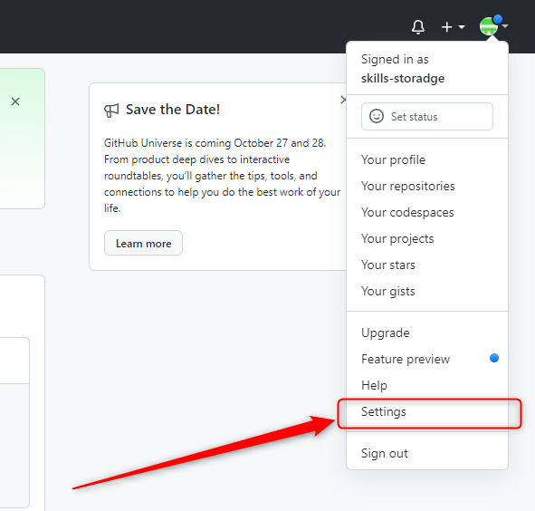

<p>
    Как вы помните, главное меню (или меню вашего аккаунта) доступно вам на любой странице сайта,
    где бы вы в данный момент не находились.
    Поэтому просто откройте это меню и нажмите на пункт <code>Settings</code>, вот так:
</p>


